INDEX
1. 솔로 레이드 10% 동향 파악
2. 10% 진입을 위한 육성루트
3. 기타 미세 팁
1. 솔로 레이드 10% 동향 파악
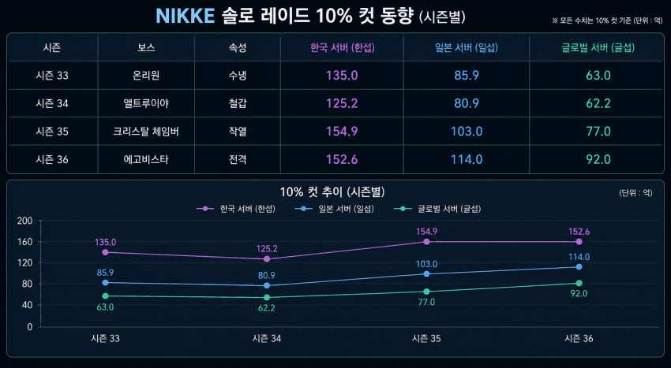
간단하게 도표로 보겠습니다.
3시즌만에 서버 별로 크게는 30억에서 작게는 20억까지 컷이 올라왔습니다
에고비스타 솔로 레이드 출시 전 3.5주년 라이브 방송을 통해 랩버지가 시사한 내용이 있는데요
요약하자면 '솔로 레이드 인플레이션 인지하고 있고 난이도 올리겠다.' 였습니다
(???: 제 의견과는 다릅니다.)
그 결과 에고비스타 솔로 레이드에서는 한섭 10%컷이 횡보했지만 이는 지표일 뿐 사실 상 올라갔다고 볼 수 있습니다
체급이 상당한 '아니스: 스타'와 '네온: 비전아이'가 출시 됐는데요
두 신규 니케를 통해 전체적인 딜 상승이 이뤄졌음에도 횡보 했다는 건
앞으로 출시 될 솔로 레이드의 난이도가 낮다면 체급에 따라 점수 인플레에 직격 적인 영향이 있다고 볼 수 있습니다
향후 출시될 시즌 37 솔로 레이드는 수냉 울트라로 점쳐지고 있습니다
만약 기존 울트라처럼 코어도 있고 난이도 밸런싱을 통해 완주가 용이해진다면 시즌 35, 크챔과 같은 체급컵이 될 예정입니다
정확한 건 출시 되어야 알겠지만 내가 어려우면 다른 니부이들도 어렵기 때문에 크게 걱정 안하셔도 됩니다
결론은 계속해서 오르고 있다! 그리고 돌니스와 네온이 솔레 점수컷 인플레에 상당히 예민한 촉매제다! 라는 점만 인지하시면 됩니다
2. 10% 진입을 위한 육성루트
10% 진입을 고려하는 니부이라면 메인 스테이지 덱은 어느 정도 육성이 끝난 상태겠죠?
이러한 전제가 성립되지 않는다면 아직 솔레를 신경쓸 시기가 아닙니다
진입 시기로 본다면 노말 스테이지를 거의 다 클리어 할 쯤이 되겠네요
우선 10% 진입을 위해선 선택과 집중을 해야 합니다
니케는 템포가 확실한 게임입니다
픽업이 지속적으로 나오지만 버릴 건 버리고 들어갈 건 들어가야 합니다
현재 픽업을 기준으로 보겠습니다
260517 기준 진행중인 픽업은 민트, 이브 그리고 레이븐입니다
세 니케의 차이점이 뭘까요?
크게는 민트 - 통상으로 편입, 이브 & 레이븐 - 한정 콜라보로 볼 수 있습니다
세부적으로 보면 민트는 서포터로 대체 픽을 고를 수 있지만 이브, 레이븐은 철갑 기준 대체가 없는 한정 픽업입니다
제한된 쥬얼을 효율적으로 분배하기 위한 우선순위를 고려해보겠습니다
1순위 레이븐, 이브 - 우선적으로 픽업, 이번 픽업 지나면 복각 없다고 보는게 정배
픽업에서 못 건진다면 골마 써서라도 영입
2순위 민트 - 쥬얼 남는다면 명함 챙겨보기, 쥬얼 여력 없다면 위시 리스트 투입 후 통언뜬
으로 볼 수 있겠습니다
대부분의 솔레에선 '픽업 니케=솔레 접대' 라는 공식을 따르고 있습니다
이번 솔레는 예외의 경우에 해당하지만 픽업은 웬만하면 명함은 건지시는 걸 추천합니다
쥬얼 만큼 중요한 모듈도 보겠습니다
솔레 기간 제외하곤 모듈 사용하지 않는게 정배입니다
그럼 어느 니케에게 모듈을 투자할 지 고려해보겠습니다
가성비 투자는 서포터입니다
우선 서포터에 대해 고려하기 전 시공증과 공증의 차이에 대해 알아야합니다
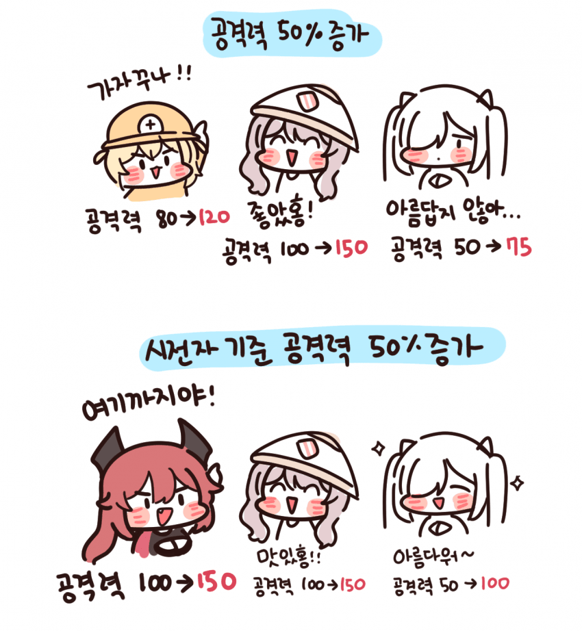
출처: 한눈에 보는 공증 vs 시공증 (https://gall.dcinside.com/mgallery/board/view/?id=gov&no=2657449)
정말 알기 쉽게 정리해주셨습니다
저희가 주목할 니케는 시공증 서포터입니다
시전자 기준 공격력 증가는 무수히 많은 요소에서 증가가 이뤄지는데요
오버로드 옵션 중 '공격력 증가'는 이에 영향을 주지 않습니다
따라서 시공증 서포터는 깡오버로 사용 가능하다고 볼 수 있습니다
(일부 니케의 경우 필요 옵션이 있을 수 있습니다.)
어떤 서포터를 먼저 올려줄 지 보겠습니다
1버스트입니다
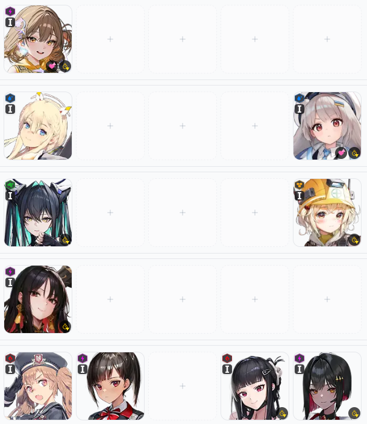
전체적인 목록은 이렇습니다
대부분의 니케가 딱히 사족이 필요 없을 정도로 필수적입니다
여기서 코멘트가 필요한 니케들 보겠습니다
샷건덱입니다
토브는 애장품을 기준으로 보고 있습니다
하지만 애토브는 버쿨감 니케를 필수적으로 채용해야합니다
그 파츠로 사용되는 니케는 대표적으로 프솔린인데요
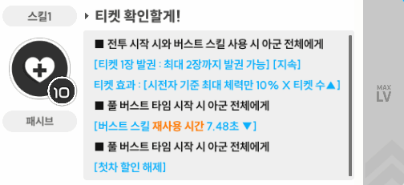
프솔린의 스킬1입니다
최소 9 이상 투자 해야 버스트가 매끄럽게 이어집니다
이외에 버쿨감 요원으로 사용할 수 있는 니케는 동D, 루주가 있습니다
다음으로 애장품 미란다, 츠바이입니다
상기 니케들도 버쿨감이 없으므로 버쿨감 요원이 필요한데요
동D, 루주와 같은 버쿨감 요원을 페어로 사용해주시면 됩니다
만약 미란다와 츠바이 하나를 선택해야 한다면?
범용성이 더 좋은 미란다를 추천 드립니다
미란다 스작은 1/10/10으로 사용해주세요
서포터 육성 우선순위입니다
좌측부터 육성해주세요
(목단, 미란다, 토브는 애장품 기준입니다.)
이외에는 1버스트로 기용 가능한 라피: 레드후드가 있습니다
하지만 스테덱을 다 키웠다면 라피가 육성되어 있을 것 이므로 3버스트로 기용 하시는 걸 추천 드립니다
2버스트입니다
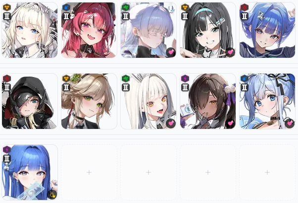
2버스트는 키워야 할 니케가 정말 많습니다
상단부터 범용성과 중요도를 고려해 배치했습니다
(한정 캐릭터의 경우 제외했습니다.)
아르카나의 경우 우선 순위가 거의 없다고 보셔도 무방합니다
코멘트 필요한 니케 보겠습니다
메이드 마스트입니다
메스트는 2버 단독으로 사용 불가능합니다
페어로 크라운 또는 앵커를 사용해야합니다
크라운의 경우 메스트와 엄청난 시너지를 보여주는데요
스테 미시면서 이미 경험하셨을테니 이 부분은 패스하겠습니다
마앵덱에서 중점적으로 봐야 할 부분이 있습니다
해당 덱의 무한 장탄 조건 알고 계신가요?
재장전 큐브 8레벨 이상, 마앵 스킬2 기준 메스트 9, 앵커 7 두 니케의 합 16 이상일 경우 무한장탄이 적용됩니다
이 부분을 고려하여 스작 투자해주시고 사용하시기 바랍니다
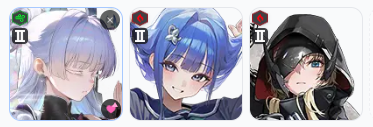
본인 우코 내에서 어느 정도 딜러의 역할을 수행하는 2버스트 니케입니다
정말 여유가 된다면 오버로드 옵션에 투자해줄 수도 있겠지만
저흰 10%를 목표로 하고 있기 때문에 그렇구나 정도만 알아가도록 하겠습니다
단, 그레이브의 경우 버스트 충전 요원으로도 기용 가능합니다
힐러의 역할을 수행할 수 있는 니케입니다
나유타의 경우 스킬1 위선을 통해 아군 전체에게 체력 회복을 균등 분배합니다
또한 전투 시작 시 본인에게 9초 간 유지되는 불굴(무적) 효과가 있습니다
웡과 상당히 좋은 힐 시너지가 있겠으나 아직 복각하지 않았으므로 그렇구나.. 정도만 알아가겠습니다
나가는 엄폐물 회복과 체력 회복과 코어 데미지 증가가 있는 니케입니다
또한 본인에게 쉴드가 들어올 시 추가 시공증이 주어집니다
샷건덱의 완주가 힘들 경우 투입할 수 있는 힐러입니다
블랑은 버스트 사용 시 아군 전체 체력 회복과 가장 체력이 낮은 아군에게 불굴(10초 무적)을 부여하는 니케입니다
단 스킬2 래빗 트윈즈 W 를 보시면 동일 스쿼드 아군을 필요로 하는 조건이 있습니다
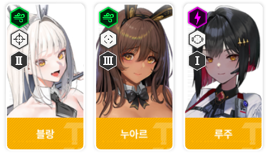
777 스쿼드인 누아르, 루주와 같이 사용 하셔야하며 대부분의 상황에선 루주를 같이 사용하시는 걸 추천드립니다
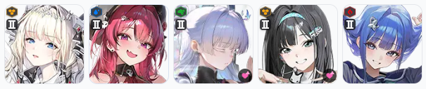
육성 우선순위 추천입니다.
바이드의 경우 민트로 대체될 수 있겠으나 작성일 기준(5/18) 아직 연구가 필요한 단계이므로 보류하겠습니다
민트의 성능이 바이드보다 우위라고 판단되어 민트로 교체했습니다
이미 바이드를 키우신 상태라면 민트 육성하시는 것 보단 우선 바이드 사용하시고
차후에 민트 육성 하시는 걸 추천드립니다
만약, 두 니케 모두 육성 하지 않으셨다면 민트를 육성해주세요
1,2 버스트 서포터 정리입니다
1. 시공증 니케는 깡오버로 효율적인 투자하자
2. 버스트가 매끄럽게 이어지도록 버쿨감 니케들 스작에 투자해주자
3. 범용성을 고려하여 투자하자
3버스트입니다
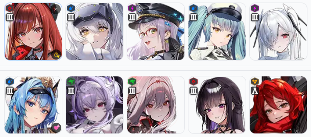
한정 캐릭터를 제외한 범용적으로 사용되는 3버스트 니케입니다
좌측 상단부터 육성 중요도 순서로 배치했습니다
코멘트 필요한 니케들 보도록 하겠습니다
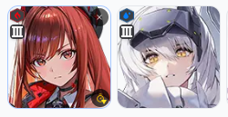
우선 스테덱의 필수 니케인 라피: 레드후드와 스노우화이트: 헤비암즈입니다
'엥?! 얘네가 얘기할 게 뭐가 있죠? 당연히 키워야 하는거 아닌가요..?'
라고 생각 하실 수 있습니다
제가 강조 드리고 싶은 부분은 무리해서 오버로드 12줄 만들지 말라는 겁니다
적당히 타협하시고 다른 니케들 분배해서 올려주는 게 더 이득이에요
애장품 헬름, 프리바티입니다
두 니케는 토템으로 투입 시 훌륭한 성능을 보입니다
본인 우코에선 딜러로도 사용 가능합니다만
효율과 범용성을 보았을 땐 토템으로 사용하시는 편이 좋습니다
헬름은 다양한 역할을 수행하는데요
스킬을 하나 하나 뜯어보면 좋겠지만 간략하게 보겠습니다 (니빙기 얘기가 안끝난다..)
버충 요원, 힐러 그리고 버퍼로 사용할 수 있습니다
스킬 1,2에는 과감하게 투자해주셔도 좋지만 버스트 스킬인 3에는 어느 정도 타협하셔도 됩니다
다음으로 프리바티입니다
받댐증, 장탄 수 그리고 장전 속도 토템으로 사용 가능합니다
재장전 버프는 크라운과 같이 사용 시 장전 모션이 캔슬 될 정도로 좋은 시너지를 보이고 있습니다
단 프리바티는 애장품 3단계부터 사용 가능하니 참고하여 기용하시기 바랍니다
리ㅂㅓ렐리오의 친구들입니다
리버렐리오는 단독 성능도 상당히 준수하고 버충도 뛰어납니다
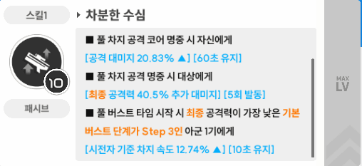
이외의 세 니케도 보겠습니다
신데렐라는 본인 우코에선 상당히 강세입니다
본인 체급이 높은 만큼 짬덱에서도 좋은 성능을 보여주고 있습니다
미하라: 본딩 체인은 딜러 토템 역할의 GOTE입니다
본인 우코에서도 토템 역할을 수행할 정도로 높은 체급을 보여주고 있습니다
레드 후드는 현재 체급이 타 니케들에 비해 많이 밀리는게 사실입니다
단, 버충 요원 및 관통 철갑 솔레에선 강세를 보이고 있습니다
상기 두 니케와는 달리 적당히 타협해서 비는 자리에 넣는 용도로만 사용하시면 됩니다
++) 샷건덱 주요 딜러 추가합니다
애장품 드레이크, 도로시: 세렌디피티입니다
애장품 드황은 샷건덱에서 주요 파츠로 사용되고 있습니다
샷건덱에서 2버는 다양하게 대체 가능하나 드황과 토브 없이는 효율이 나오지 않습니다
버퍼와 딜러의 역할을 동시에 수행하므로 반드시 애장품 3단계 달성 후 사용해주세요
그리고 샷건덱 체급 상승의 주요 원인 수로시입니다
26년 기준 여름에 복각 예정이니 반드시 챙겨가셔야 합니다
작년 픽업을 놓친 분들에겐 마지막 퍼즐이 되겠네요
3버스트 정리하겠습니다
1. 스테덱 메인 딜러들 12줄작 하지마라
2. 4우코는 필수, 공증은 선택, 부가 옵션은 감성
(오직 우코만이!! 모든 것을 능가한다!!!)
3. 애장품 미리미리 준비하자
3. 기타 미세 팁
육성도 중요하지만 대부분 소홀히 하시는 부분들 보겠습니다
우선 설정.
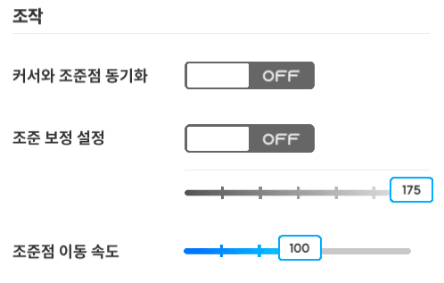
커서와 조준점 동기화는 상황에 맞게 사용하셔야 합니다
크라켄에서 연습해보시면 커동 킨거랑 끈거랑 차이가 코어 적중률에서 명확하게 보이실거에요
조준 보정도 상황에 맞게 ON/OFF 해주세요
최소 발사 횟수 보정은 말할 게 없습니다
그냥 무조건 키세요
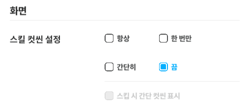
스킬 컷씬은 간단히와 끔으로 나뉩니다
간단히의 경우 협전에서 볼 수 있는 그 컷씬입니다
솔레칠 때 간단히 사용하면 버스트 컷씬 동안 생각할 시간을 벌 수 있어요
'저는 흐름 끊기는 게 싫어요!' 라는 분들은 끔 사용하시면 됩니다
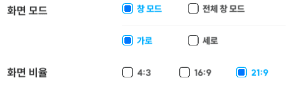
화면 모드는 반드시 창 모드, 21:9 사용하셔야 합니다
전체 창 모드로 사용할 때와 달리 타격 가능한 시점으로 잡힐 수 있기 때문에 반드시 설정 하셔야 해요
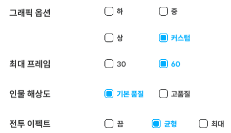
이외 그래픽 옵션들이 딜에 영향을 주는 건 맞습니다만..
지루하고 현학적이니 프레임 잘 나오면 딜 또한 잘 나온다만 알고 가시면 됩니다
다음으로 비법소스.
https://gall.dcinside.com/mgallery/board/view?id=gov&no=5060561
제가 관리 중인 공략 모음집입니다
정보탭에 올라오는 솔레 관련 비법 소스들을 취합하고 있습니다
저번 솔레 에고비스타 기준으로 보겠습니다
해당 링크 보시면 현재는 원본 동영상이 삭제 되었으나 판 저지 별로 기믹 수행 시간이 다르다는 정보글입니다
1초는 버스트를 쓸 수도 못 쓸 수도 있는 중요한 시간입니다
하지만 해당 정보를 몰랐다면 그냥 넘어갔을 수도 있습니다
이처럼 택틱은 정말 중요한 부분이니 꼭 니마갤이 아니어도 공유되는 택틱들 반드시 알아가셔야 해요
마지막으로 메타 인지.
솔레 랭킹보드, 갤에 올라오는 덱 정보 꾸준히 눈팅하셔야 합니다
그리고 본인 덱 점검이 필요하시면 혼자 고민하시지 마시고 과감하게 질문탭에 물어보세요
어차피 10% 노리는 니청년은 할배분들 경쟁 상대가 아니라서 친절하게 답변 해주실거에요
공략이 길었네요
다음엔 3% 공략으로 뵙겠습니다
궁금하신 건 댓글 주시면 답변 드리겠습니다